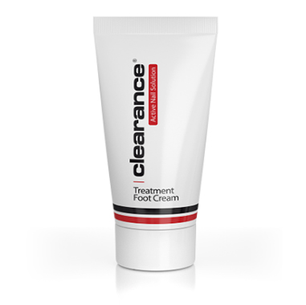

По вопросам приобретения продукции обращайтесь по телефону +7 (964) 473-77-77.
В работе мы используем только качественные и современные материалы и считаем, что только работа с качественными продуктами - залог отличного результата. У нас вы можете приобрести продукты из профессональных линеек компаний AKZENTZ и CLEARANCE.
СЕРИЯ СРЕДСТВ CLEARANCE
Серия средств для педикюра и маникюра Clearance была разработана с применением самой передовой технологии и основана на использовании высококачественных компонентов, гарантирующих моментальные и видимые результаты.
Метод работы с профессиональной серией состоит из простых, легко применимых на практике этапов и даёт быстрые результаты.
В плане профессионализма и безопасности, использование препаратов clearance полностью отвечает требованиям как самих мастеров, так и клиентов.
КРЕМ ДЛЯ НОГ
Лечебный крем для ног, обогащённый маслом авокадо, включает в свой состав витамины Д, А и Е, необходимые для повышения уровня влажности кожного покрова, регенерации клеток, повышения упругости кожи и её оздоровления.
150ml.
